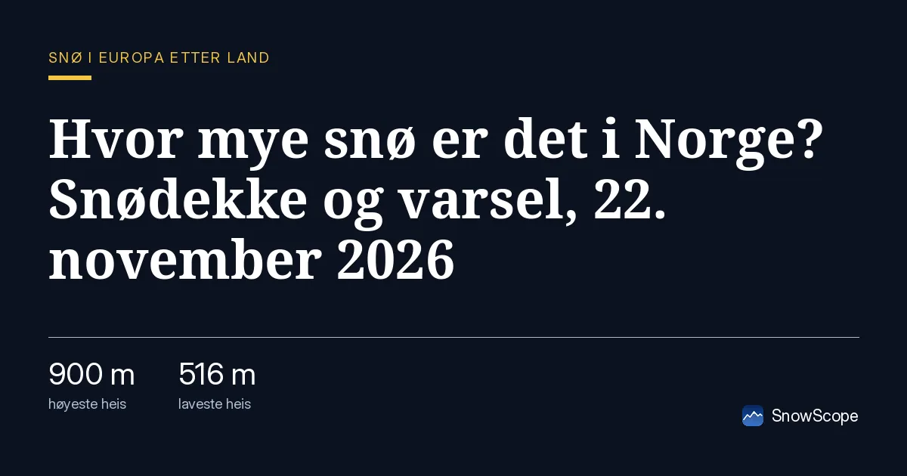

Hvor mye snø er det i Norge? Snødekke og varsel, 22. november 2026
Norges snøsesong utfolder seg i sitt vanlige tempo. Riksgränsen, landets dypeste skistasjon, ligger på 54 cm—bare 9 cm under normaldybden for 22. november—mens 150 av 155 skisamfunn nå har snø på sine øvre heng.
Se snøprognosen for Riksgränsen direkte i SnowScope-appenSnødybde, puddervarsler og 3D-kartet, gratis.
Det større bildet: høyden betyr mest nå
Tidlig sesong betyr tynt snølag, så hvor du skier betyr mer enn den totale dybden. Ved kysten og lave heng (0 til 500 m) har bare 88% dekke og gjennomsnittet er 9 cm. Klatre til 500–1 000 m og du finner 19 cm med 98% dekke. Over 1 500 m er bildet fullstendig: 100% hvitt og 29 til 38 cm dypt.
Denne høydegradientalen forklarer hvorfor referansestasjonene—alle mellom 465 m og 2 180 m—viser så ulike dybder. Tromsø Alpinpark, på bare 222 m, ligger 16 cm under november-gjennomsnittet sitt, mens Galdhøpiggen Sommerskisenter, selv om det ligger på 2 015 m, er fortsatt tidlig i sesongen og viser mindre enn det vil etter jul.
| Resort | Today | Normal for the date | Share of normal |
|---|---|---|---|
| Riksgränsen | 54 cm | 63 cm | 86 % |
| Sulitjelma Fjellandsby | 49 cm | 55 cm | 89 % |
| Tromsø Alpinpark | 23 cm | 39 cm | 59 % |
| Steilia | 31 cm | 60 cm | 52 % |
| Galdhøpiggen Sommerskisenter | 29 cm | 86 cm | 34 % |

Hvilke skisteder som har grunnlaget nå
Riksgränsen leder med 166 cm. Dette er 112 cm over typisk dybde for denne datoen og viser høydefordelen: toppen når 900 m. Sulitjelma Fjellandsby følger på 126 cm, så Tromsø Alpinpark (96 cm), med Steilia og Galdhøpiggen likt på 57 cm hver.
Sammenlign disse mot november-normalene deres: Riksgränsen ligger på 86% av normalt, Sulitjelma på 89%, Tromsø på 59%, Steilia på 52%, og Galdhøpiggen på bare 34%. Ingen ligger foran normalen, noe som er helt typisk for slutten av november. Sesongen er i rute, ikke tidlig.

Nysnø denne siste uken og hva som kommer
De siste 72 timene ga opp til 21 cm i de høyeste sonene (Lyngenalpene, Trollheimen og Jotunheimen fikk 33 cm hver), men bare 8 cm falt i løpet av den siste dagen. Rundt 73 000 km² av landet fikk minst 5 cm nysnø i denne perioden.
Værmeldingen for de neste tre dagene viser opp til 11 cm mulig, med 15 cm over hele uken. Søndag 29. november er flagget som snørikeste dag, med opp til 11 cm i områdene som får mest snø. Uke 2 til 3 (30. november til 6. desember) kunne se opp til 32 cm på de brattest hellene—et betydelig værendring hvis det holder.
Hvor fort snølaget vokser
For sju dager siden var 243 470 km² av Norges fjell og bakker hvite. I dag er dette tallet 264 260 km². Økningen på 20 790 km² på ei uke viser sesongen akselererer inn i sitt rette tempo. Snø ligger nå sammenhengende fra høye topper ned til havet og kystfrangene.
Riksgränsen har holdt det dypeste snøet hver eneste dag denne uken, noe som befester sin tidligsesongsfordel som favorittstasjon for solid grunnlag og et forsprang på sesongen.
Det regionale snøfallsmønsteret og hva det betyr for planlegging
Snøgrensen starter nå på 0 m—som betyr selv de laveste fjellene har et tynt dekke. Det kartlagte området viser 94% hvitt totalt. Sverige ved siden av ligger på 96% med Björkliden som holder 136 cm (10 cm mindre enn Riksgränsen, selv om lavere på kartet), mens Finland ligger på 94% dekke med bare 22 cm på Kallin—en mye yngre sesong.
Hvis du velger mellom skisamfunn for neste uke, Riksgränsen og Sulitjelma Fjellandsby tilbyr det mest pålitelige underlaget. Hvis du kan vente til etter 29., vil nysnø gjøre de øvre hellene mykere og veiene blir ryddet, noe som gjør midten av november til et roligere, tryggere vindu for tidligsesongskiløpere.
Hva toppsesongtiming betyr for denne vinteren
Historie viser at Riksgränsen når sitt dypeste snø i tidlig til midten av april. Det betyr snaue fire og en halv måned med akkumulasjon foran. De nåværende 54 cm er et grunnlag, ikke en topp, så tålmodighet og timing av besøk etter nysnø er nøklene til bra tidligsesongsski.
Ved slutten av november, hvis værmeldingen 32 cm ankommer på de høye hellene, blir bildet merkbar bedre. Følg nøye med på ukeutsikten: en eneste stor værhendelse tidlig i desember kan forvandle de lavere runene fra flekkvis til skibar.
Tips til skiløpere
- Ski over 1 000 m for sammenhengende snødekke og ingen steiner; lavere retteupper er fortsatt blandet.
- Vent på solen på sørvender om morgenen—fast snø over natta er lettere å kontrollere.
- Etter 29. november vil veiene til de høye stasjonene være klarere og nysnø vil ha satt seg; det er det bedre vinduet.
- Sjekk hvilke heiser som går: dybde alene betyr ikke at hele bakken går. Tidligsesongsoperatører kan kjøre bare øverst terreng.
- Vinterhjul eller kjettinger er nødvendig hvis du kjører til de høyere stasjonene; veiene er åpne men forholdene varierer fra plass til plass.
Om tallene
Snødybdene for skistedene er det dypeste snødekket i de øvre bakkene på datoen som vises; de er anslag for et område, ikke en måling i ett punkt. Prognoser kan endre seg. Les alltid det offisielle snøskredvarselet før du kjører utenfor preparert løype.
Siter denne rapporten
For forskning, undervisning eller presse: tallene og diagrammene kan brukes fritt under CC BY 4.0 med denne kildehenvisningen.
SnowScope (2026), Hvor mye snø er det i Norge? Snødekke og varsel, 22. november 2026, https://snowscope.app/blog/nb/2026/11/norway-snow-on-schedule-22-november-2026.html, hentet 2026-11-22
SnowScope (Atlas Labs). (2026, November 22). Hvor mye snø er det i Norge? Snødekke og varsel, 22. november 2026. SnowScope snow reports. https://snowscope.app/blog/nb/2026/11/norway-snow-on-schedule-22-november-2026.html
BibTeX
@misc{snowscope2026norwaysnowonschedule22no,
author = {{SnowScope (Atlas Labs)}},
title = {Hvor mye snø er det i Norge? Snødekke og varsel, 22. november 2026},
year = {2026},
month = nov,
howpublished = {\url{https://snowscope.app/blog/nb/2026/11/norway-snow-on-schedule-22-november-2026.html}},
note = {Published 2026-11-22 19:35 UTC; accessed 2026-11-22}
}· CC BY 4.0 · Metoder, data og verktøy →
Riksgränsen: snø og temperatur etter høyde, i vinter sammenlignet med i fjor (verktøy) →
Følg Riksgränsen
Gratis: en melding når nysnø er på vei, og prognosen hver morgen.